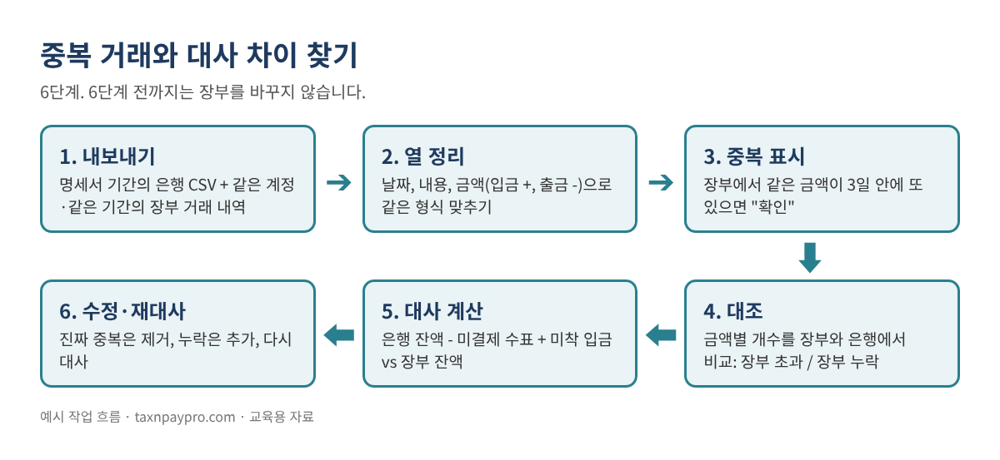
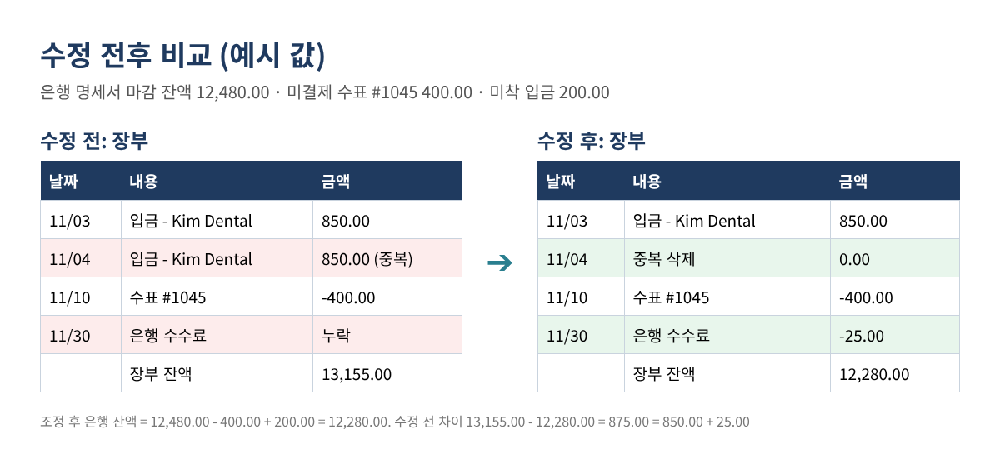
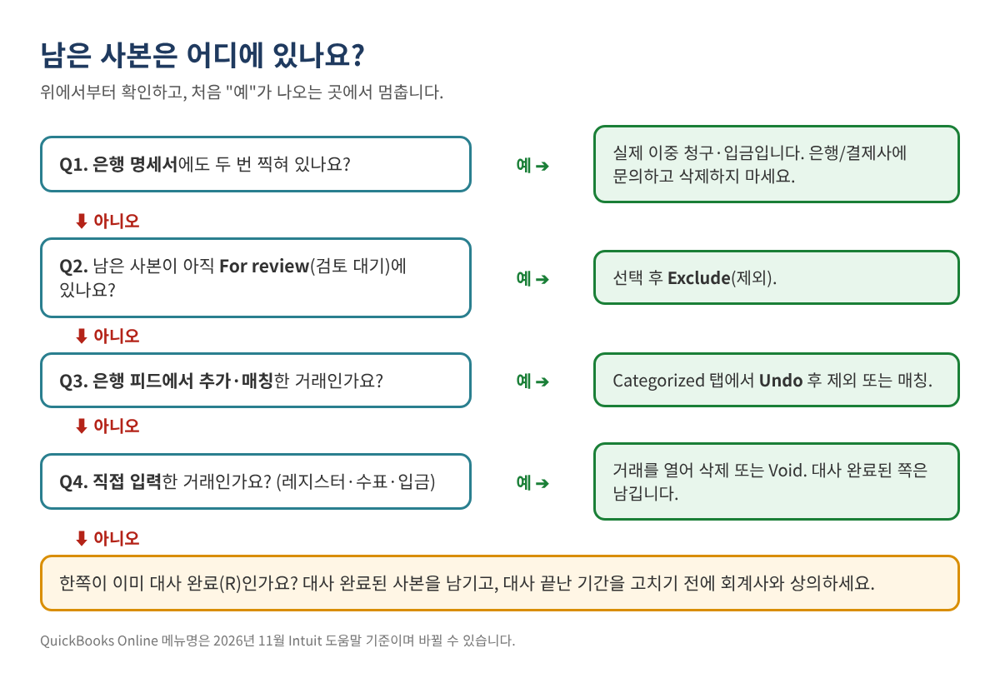

은행 거래가 중복되고 대사(Reconcile)가 안 맞을 때: 차이를 끝까지 찾는 방법
대사(Reconcile) 화면을 열었는데 차이가 0이 아닙니다. 지난달엔 맞았는데 이번 달엔 시작 잔액부터 틀어져 있기도 합니다. 자세히 보니 같은 손님 입금이 두 번, 같은 주유비가 두 번, 은행 연결을 다시 했더니 몇 달 치 거래가 통째로 또 들어와 있습니다.
이 글은 거래를 하나도 고치기 전에, 내보내기 파일 두 개와 엑셀만으로 모든 중복과 모든 대사 차이를 찾아내는 방법을 설명합니다. QuickBooks Online과 Desktop 모두, 어느 은행이든 똑같이 쓸 수 있습니다.
이런 분께 필요합니다: 은행·카드 계정 대사가 맞지 않는 사장님, 또는 은행 재연결 후 같은 거래가 다시 들어와 정리해야 하는 북키퍼.
중복과 차이는 왜 생길까
대사 문제의 원인은 대부분 아래 몇 가지입니다.
- 은행 연결을 다시 했다. Intuit 도움말도 연결을 끊었다가 다시 하면 "과거 거래를 다시 내려받는다"고 경고합니다.
- 직접 입력한 거래를 은행 피드에서 매칭하지 않고 또 추가했다.
- 손님 대금을 두 번 기록했다. 인보이스에 결제(Receive payment)로 한 번, 은행 피드에서 새 입금으로 또 한 번. 매출이 두 배가 됩니다.
- 은행 수수료·이자·부도 처리가 명세서에는 있는데 장부에는 없다.
- 대사가 끝난 거래를 나중에 고치거나 지웠다. 그래서 지난달 마감 잔액과 이번 달 시작 잔액이 달라진다.
- 시차 항목: 아직 현금화되지 않은 수표, 아직 입금되지 않은 예금. 이것은 정상이며 오류가 아닙니다.
목표는 모든 차이를 이 중 하나로 분류하는 것입니다. 분류만 되면 고치는 방법은 간단합니다.

1단계: 같은 기간으로 양쪽 자료 내보내기
은행: 명세서 기간을 CSV(또는 엑셀)로 내려받습니다. 예: 2026-11-01 ~ 2026-11-30, 명세서 날짜 그대로.
장부: 같은 계정, 같은 기간의 거래 내역(레지스터)을 내보냅니다.
QuickBooks Online
- All apps > Accounting > Chart of accounts로 갑니다.
- 해당 은행 계정에서 View register를 선택합니다.
- 기간을 명세서 기간으로 맞추고 엑셀로 내보내거나 출력합니다.
QuickBooks Desktop
- Lists > Chart of Accounts에서 은행 계정을 선택해 레지스터를 엽니다(또는 QuickReport 실행).
- 날짜를 명세서 기간으로 맞추고 Excel > Create New Worksheet를 선택합니다.
2단계: 두 목록을 같은 형식으로 맞추기
각각 Bank, Books 시트에 붙여 넣습니다. 열은 날짜(A), 내용(B), 금액(C) 순서로 맞추고, 입금은 +, 출금은 -로 둡니다. 입금·출금 열이 따로 있으면 C열에 합칩니다.
=IF(D2<>"", D2, -E2) (D = 입금 열, E = 출금 열)
날짜가 글자가 아닌 진짜 날짜인지 =ISNUMBER(A2)가 TRUE인지로 확인합니다. 금액은 =ROUND(C2,2)로 반올림해 849.9999 같은 값 때문에 매칭이 빠지지 않게 합니다.
3단계: 장부 안의 중복 의심 표시
Books 시트 D열에 아래 수식을 넣고 끝까지 채웁니다.
=IF(COUNTIFS($C:$C,C2,$A:$A,">="&A2-3,$A:$A,"<="&A2+3)>1,"Check","")
같은 금액이 3일 안에 또 있으면 "Check"가 뜹니다. 모든 "Check"가 중복은 아닙니다. 매달 1일 렌트는 날짜가 멀어서 안 뜨지만, 같은 날 실제로 50달러짜리 매출이 두 건이면 뜹니다. 그 구분은 다음 단계에서 합니다.
4단계: 장부와 은행 대조
Books 시트에 열을 추가합니다.
E: =COUNTIF(Bank!$C:$C, C2) 은행에 이 금액이 몇 번 있나 F: =COUNTIF($C:$C, C2) 장부에 이 금액이 몇 번 있나 G: =IF(F2>E2,"장부 초과",IF(E2=0,"은행에 없음",""))
Bank 시트에도 한 열을 추가합니다.
D: =IF(COUNTIF(Books!$C:$C, C2)<COUNTIF($C:$C, C2),"장부 누락","")
결과는 이렇게 읽습니다.
| 표시 | 대개 이런 뜻 | 할 일 |
|---|---|---|
| "Check" + "장부 초과" | 장부 중복 가능성 높음 | 확인 후 한 건 제거 (6단계) |
| "은행에 없음" | 미결제 수표, 미착 입금, 또는 오류 | 날짜 확인: 명세서 마감 이후면 시차 항목 |
| "장부 누락" | 은행 수수료, 이자, 입력 안 된 거래 | 장부에 추가 |
| "Check"만 | 같은 금액의 실제 거래 두 건 | 그대로 둠 |
표 1. 표시 읽는 법. 정리를 돕는 열일 뿐이니 한 줄씩 직접 확인하세요.
5단계: 차이를 숫자로 증명하기
대사는 결국 이 식 하나입니다.
은행 명세서 마감 잔액 - 미결제 수표·출금 (장부에는 있고 은행엔 아직 없음) + 미착 입금 (장부에는 있고 은행엔 아직 없음) = 장부 잔액이 되어야 할 금액
남는 금액은 "장부 초과"와 "장부 누락" 목록으로 설명돼야 합니다. 예시를 보겠습니다(예시 값).
| 항목 | 금액 |
|---|---|
| 은행 명세서 마감 잔액 (2026-11-30) | 12,480.00 |
| 미결제 수표 #1045 차감 | -400.00 |
| 미착 입금 가산 (11/30 입금, 12/01 반영) | 200.00 |
| 조정 후 은행 잔액 | 12,280.00 |
| 수정 전 장부 잔액 | 13,155.00 |
| 설명해야 할 차이 | 875.00 |
| Kim Dental 중복 입금 11/04 (장부 초과) | 850.00 |
| 은행 수수료 11/30 (장부 누락) | 25.00 |
| 설명 안 된 금액 | 0.00 |
표 2. 예시 값입니다. "설명 안 된 금액"이 0.00이 되면 고칠 것이 정확히 정해집니다.

막혔을 때 쓰는 요령: 남은 금액을 2로 나눠 보세요. 그 금액의 거래가 있으면 부호를 거꾸로(입금을 출금으로) 넣었을 가능성이 큽니다. 남은 금액이 9로 나누어떨어지면 숫자 자리가 바뀐 입력(1,520을 1,250으로)을 찾아보세요.
6단계: 증명된 것만 고치기
고치기 전에 남은 사본이 어디서 왔는지 먼저 봅니다. 아래 판단표는 Intuit의 은행 피드 중복 거래 도움말 순서를 따랐습니다.

QuickBooks Online
- 아직 For review에 있음: All apps > Accounting > Bank transactions에서 For review 탭의 남은 사본을 선택하고 Exclude. 제외된 거래는 Excluded 탭으로 가며, 잘못 제외했으면 그 탭에서 선택 후 Undo.
- 은행 피드에서 이미 추가함: Categorized 탭에서 Added or Matched 열의 링크를 선택하고 Undo. 거래가 For review로 돌아오면 올바른 거래와 매칭하거나 제외합니다.
- 직접 입력한 거래: 레지스터에서 거래를 열어 삭제(기록을 남기려면 Void). Intuit에 따르면 삭제한 거래는 복구되지 않으며, 감사 기록(Audit log)에 내용만 남습니다.
- 결제 때문에 매출이 두 배: 추가된 입금을 Undo하고, 기존 손님 결제(Payment)와 매칭합니다.
- 시작 잔액이 틀림: All apps > Accounting > Reconcile에서 계정을 고릅니다. "Your beginning balance is off by..." 안내가 보이면 We can help you fix it을 눌러 차이 보고서를 엽니다. 대사가 끝난 뒤 바뀌거나 지워진 거래가 나옵니다.
QuickBooks Online에서 대사 전체를 취소(Undo)하는 것은 Primary Admin이 History by account 화면에서 합니다. Intuit는 되돌릴 수 없고 관련 대사 보고서와 첨부 파일도 지워진다고 경고하니, 먼저 내려받아 두고 회계사와 상의한 뒤 진행하세요.
QuickBooks Desktop
- 은행 레지스터에서 남은 사본을 찾아 삭제 또는 Void. 대사 완료(체크 표시)된 쪽은 남깁니다.
- 지난달 잔액이 바뀌었다면 Reports > Banking > Reconciliation Discrepancy로 대사 후 수정된 거래를 확인합니다.
- 대사 화면에서는 Banking > Reconcile > Locate Discrepancies로 같은 내용을 볼 수 있습니다.
다 고쳤으면 다시 대사합니다. 차이는 0.00, 장부 잔액은 5단계의 조정 후 은행 잔액과 같아야 합니다.
자주 하는 실수
- 실제로 두 번 일어난 거래를 지움. 은행 명세서에도 두 번 있으면 장부 중복이 아닙니다.
- 대사 완료된 쪽을 지우고 새 것을 남김. 지난달 대사가 깨집니다. R 표시된 쪽을 남기세요.
- 조정 분개로 차이를 억지로 맞춤. 진짜 오류가 숨고, 대개 비용 계정에 들어가 세금 신고에도 반영됩니다.
- 피드를 "새로고침"하려고 은행을 또 재연결. 같은 과거 거래가 또 내려올 수 있습니다.
- 기간이 다른 자료끼리 비교. 은행과 장부 내보내기 기간이 같아야 합니다.
- 시차 항목을 오류로 처리. 11/29에 쓴 수표가 12/02에 현금화됐다면 미결제 목록에 둘 항목입니다.
자주 묻는 질문
어디까지 거슬러 올라가 봐야 하나요?
시작 잔액이 맞고 차이 0.00으로 대사가 끝난 마지막 달부터 그 이후 전부입니다.
은행 피드가 12개월 치를 또 내려받았어요. 하나씩 제외해야 하나요?
For review에서 여러 건을 한꺼번에 선택해 제외할 수 있습니다. 다만 먼저 4단계로 장부에 이미 있는 거래인지 확인해, 한 번도 입력되지 않은 거래를 제외하는 일이 없게 하세요.
몇 달러 차이도 찾아야 하나요?
네. 작은 차이는 큰 오류 두 개가 서로 일부 상쇄된 경우가 많습니다. 예: 빠진 수수료 425달러와 중복 입금 400달러.
세금 신고가 끝난 작년 장부도 고쳐도 되나요?
먼저 세무 대리인과 상의하세요. 신고한 연도를 바꾸면 신고 소득이 달라질 수 있어, 올해에 정정 분개를 넣는 쪽을 권하는 경우가 많습니다.
체크리스트
- ☐ 같은 계정·같은 기간으로 은행 CSV와 장부 내역 내보내기
- ☐ 두 시트 모두 날짜/내용/금액 형식, 날짜는 진짜 날짜
- ☐ 중복 표시를 한 줄씩 확인
- ☐ "장부 초과", "장부 누락" 목록 작성
- ☐ 차이를 전부 설명 (설명 안 된 금액 = 0.00)
- ☐ 중복은 원래 거래에서 제거, 누락은 추가, 대사 완료분은 유지
- ☐ 다시 대사해 0.00 확인, 보고서 저장
엑셀 파일이 바로 필요하다면
내보낸 파일 두 개를 붙여 넣기만 하면 수식이 대조해 주는 Duplicate Transaction & Bank Reconciliation Difference Finder(은행 중복거래 & 대사 차이 찾기 키트)를 Etsy와 Gumroad에서 판매하고 있습니다. 영어·한국어 병기판도 있습니다.
이 글은 교육용 자료이며 세무·법률·회계 자문이 아닙니다. 결과는 각자의 기록에 따라 다르며 특정 결과를 보장하지 않습니다. 예시 값은 가상입니다. 메뉴 이름은 바뀔 수 있습니다. QuickBooks is a registered trademark of Intuit Inc.; not affiliated with or endorsed by Intuit.
출처(2026년 11월 확인): Intuit, "Fix duplicate transactions in QuickBooks Online bank feeds": https://quickbooks.intuit.com/learn-support/en-us/help-article/duplicate-transactions/fix-duplicate-transactions-quickbooks-online-bank-feeds/L1fjxl88f_US_en_US · Intuit, "Exclude duplicate transactions in QuickBooks Online": https://quickbooks.intuit.com/learn-support/en-us/help-article/bank-transactions/exclude-duplicate-transactions-quickbooks-online/L8jyr7WpC_US_en_US · Intuit, "Fix beginning balance issues when reconciling in QuickBooks Online": https://quickbooks.intuit.com/learn-support/en-us/help-article/statement-reconciliation/fix-issues-accounts-reconciled-past-quickbooks/L8lx6PQQ5_US_en_US · Intuit, "Undo or remove transactions from reconciliations in QuickBooks Online": https://quickbooks.intuit.com/learn-support/en-us/help-article/accounting-bookkeeping/undo-remove-transactions-reconciliations-online/L6ERlEXxn_US_en_US